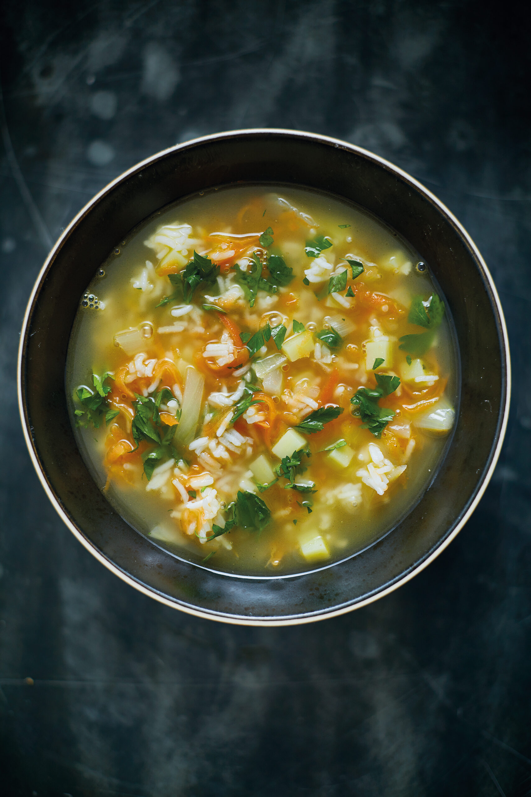
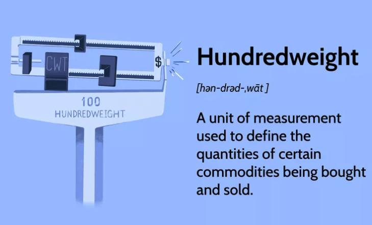
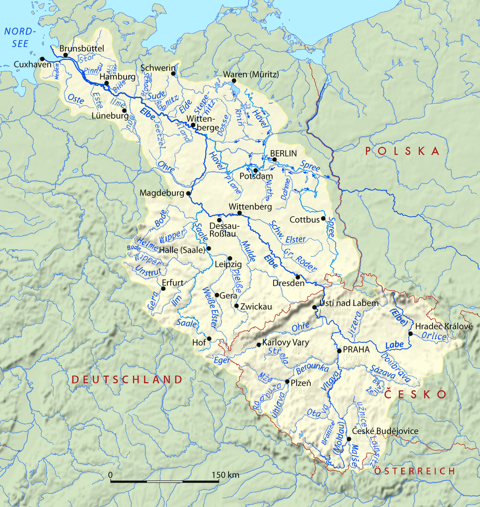
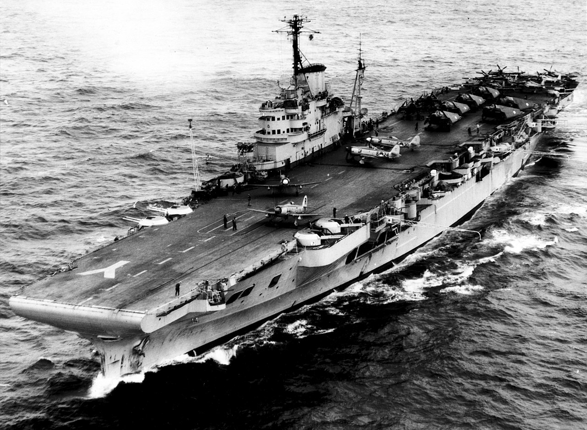
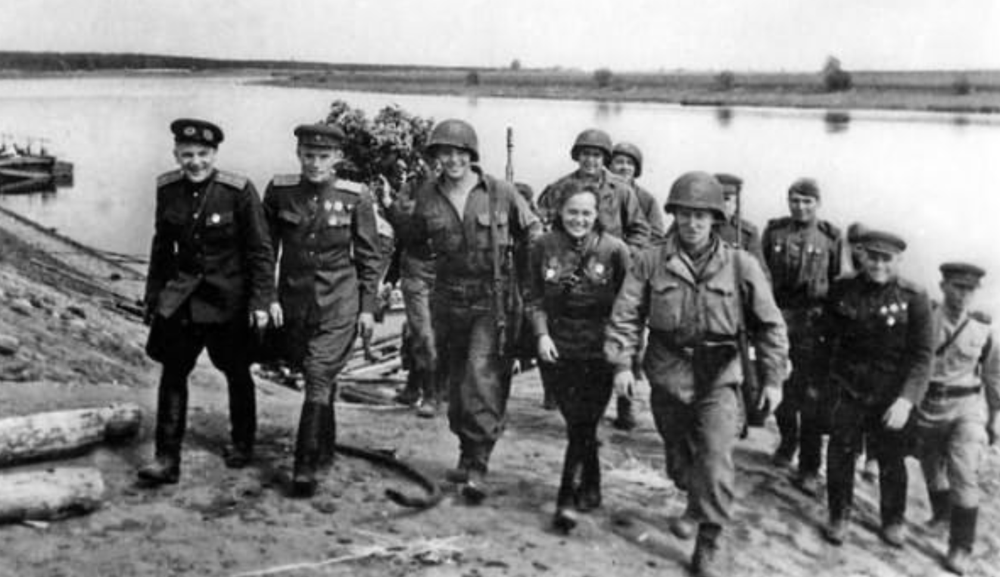
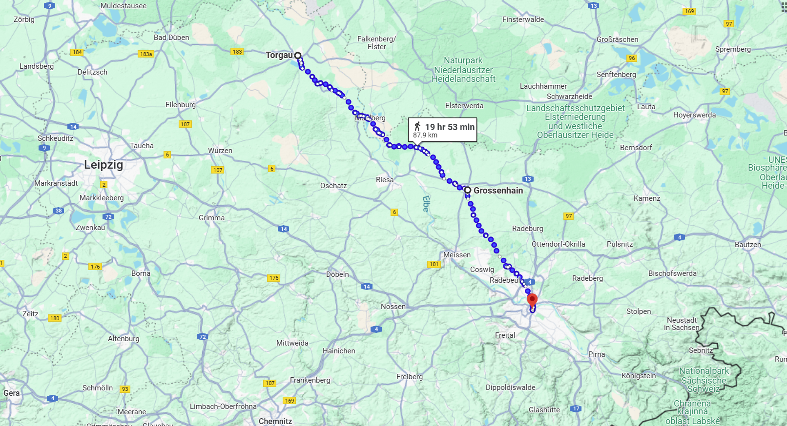
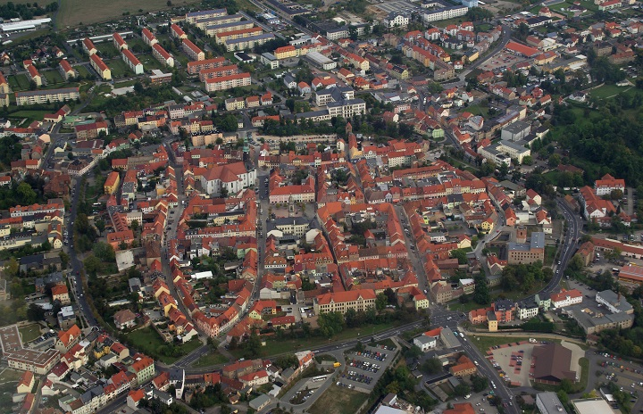

라이프치히로 가는 길 (3) - 엘베강의 밀가루
게시: 2024-11-11T06:30:59+09:00
9월 들어 나폴레옹의 상황은 무척이나 난처한 것이 되어 버렸는데, 그 결정적인 이유는 바로 그로스비어런과 덴너비츠에서 연달은 패배였습니다. 바꾸어 말하면 드레스덴의 나폴레옹을 남북동쪽에서 둘러싼 3개군 중에서 나폴레옹을 가장 괴롭히는 것은 베르나도트의 북부 방면군이라는 뜻이었습니다. 이건 매우 뜻밖의 결과였습니다. 애초에 연합군의 3개 방면군 중에서 주력은 누가 뭐래도 러시아-프로이센-오스트리아의 3대 군주들이 총집합한 보헤미아 방면군이었고, 가장 공격적인 성향을 가진 다크 호스가 블뤼허와 그나이제나우가 이끄는 슐레지엔 방면군이었습니다. 아무도 베르나도트가 큰 역할을 해낼 것이라고는 아무도 생각하지 않았던 것입니다. 실은 베르나도트가 뭐 대단한 리더쉽을 발휘하거나 과감한 작전을 펼친 것은 아니었고, 굳이 따지자면 휘하의 프로이센군이 수도 베를린을 지킨다는 투지에 힘입어 120%의 힘을 발휘해준 덕분이었을 뿐이었습니다. 어떻게 보면 나폴레옹이 위기에 처한 가장 큰 원인이 바로 그것이긴 했습니다. 이 무렵 나폴레옹 휘하 그랑다르메의 병사들은 과거와는 달리 싸움에 임하는 투지가 매우 약할 수 밖에 없었습니다. 혁명군 초기 시절, 다시는 국왕의 노예가 되지 않겠다는 결의는 온 유럽을 제패할 기초가 되었고, 나폴레옹 제국 초기에도 유럽의 신분제를 무찌르고 새로운 세상을 만든다는 명분과 함께 나폴레옹이라는 영웅을 내세운 필승의 자신감이 연전연승을 이끌 수 있었습니다. 무엇보다 신분제에 얽매지이 않는 인재 선발로 나폴레옹 휘하에는 기라성 같은 인재들이 가득했습니다. 그러나 이제 나폴레옹은 더 이상 상승장군이 아니었고, 외국의 압제자로부터 조국을 지킨다는 명분은 오히려 연합군에게 있었으며, 어린 나이에 끌려나온 프랑스 병사들은 아직 애송이에 불과했습니다. 무엇보다, 전체 그랑다르메의 절반에 달하는 외국 병사들, 특히 독일계 병사들은 자신들이 대체 무엇 때문에 프랑스를 위해 여기서 싸우고 있는 것인지 의문을 품고 있었습니다. 당시 드레스덴에 주둔하고 있던 근위 포병대의 노엘 (Jean-Nicolas-Auguste Noël) 대령도, 그랑다르메 내의 독일 병사들의 사기에 대해 우려하며 '사실 우리가 침략군이고 독일인들은 자신의 조국을 우리로부터 지기키 위해 싸우고 있다'라고 적을 정도였습니다. 그로스비어런과 덴너비츠에서의 패전은 그런 사정들의 결과였고, 실제로 이 두 전투에서 바이에른과 뷔르템베르크, 특히 과거 1809년 전쟁에서 베르나도트 휘하에 있었던 작센 출신의 병사들이 대거 탈영하여 베르나도트에게 항복했었습니다. 그러므로 9월 11일, 보헤미아로의 진격을 포기한 나폴레옹이 다음 타격 목표로 베르나도트를 생각한 것은 매우 자연스러운 일이었습니다. 우디노와 네가 연달아 실패했으니, 나폴레옹은 자신이 직접 근위대를 이끌고 베르나도트를 격파한 뒤 베를린까지 진격하면 이 고착 상태를 풀 수 있을 것이라고 판단한 것입니다. 실은 나폴레옹에게는 베르나도트를 박살낸다는 것 외에도 당장 북쪽으로 병력을 이동시켜야 할 이유가 또 있었습니다. 바로 식량 부족이었습니다. 기동성을 위해 보급을 축소하고 현지조달을 중시한 나폴레옹 전술의 특성상, 그랑다르메는 대부분 항상 이동하는 편이었고, 한 지역에 장기간 머무르는 일은 흔하지 않았습니다. 그런데 남북동쪽을 포위 당하는 바람에 대군이 드레스덴에 집결한 채로 장기간 머물게 되었지요. 그러다보니 당장 드레스덴 주변의 빵과 밀가루가 동이 나버린 것입니다. 원래 병사 1인당 하루 빵 8온스(약 227 그램)을 배급하고 있었는데, 이를 쌀 4온스(약 114 그램)으로 대체하고, 부족분은 되는 대로 감자로 보충해주기로 했지만, 이것도 오래 지속시킬 수 있는 분량이 아니었습니다. 게다가 원래 빵 8온스 자체도 이미 정상치인 16온스보다 훨씬 줄어든 양이었습니다. 가뜩이나 사기 저하로 탈영병이 속출하는 와중에 이건 심각한 상황이었습니다.

(쌀은 당시 유럽 군대에게도 꽤 중요한 배급 품목이었습니다. 야전에서 병사들은 남비에 온갖 재료를 넣고 수프를 끓이는 일이 많았는데, 거기에 쌀을 넣으면 전분이 풀려 수프가 묵직해지고 포만감을 주었기 때문이었습니다. 빵 대신 쌀을 지급한 것은 빵 대신 쌀죽, 또는 국밥을 먹으라는 것과 비슷한 이야기였습니다. 아마 당시 병사들이 쌀을 넣고 끓인 수프는 이 당근-쌀-감자 수프와 비슷한 것이었을 것입니다.) 식량 문제는 오로지 식량으로서만 해결이 가능했는데, 식량이 있기는 했습니다. 나폴레옹은 장차 다가올 전쟁을 위해 곳곳에 식량과 탄약 등을 쌓아두었는데, 드레스덴에서 북서쪽으로 약 90km 정도 떨어진 엘베강 상류변의 요새 토르가우(Torgau)가 바로 그런 곳 중 하나였습니다. 특히 토르가우와 드레스덴은 엘베강으로 연결되어 있으니 선박편으로 쉽게 화물을 운송할 수 있었습니다. 나폴레옹은 9월 12일 명령을 내려 약 15,000 CWT(hundredweight, 1 CWT는 약 100 파운드 = 45.4kg), 그러니까 약 680톤의 밀가루를 토르가우에서 드레스덴으로 실어오도록 했습니다. 이건 진짜 큰 프로젝트로서, 당시 토르가우에 있는 밀 비축량의 60%에 달하는 양이었습니다. 1kg의 밀가루에 물과 이스트를 섞어서 대략 1.5kg의 빵을 만들 수 있으니, 저 680톤의 밀가루는 하루 227g의 빵인 당시 배식량 기준으로 15만 명을 29일간 먹일 수 있었습니다.

(왜 hundredweight의 약어가 CWT인지 궁금하실 텐데, 이는 라틴어에서 100을 뜻하는 centum에서 파생된 cental weight라는 단어를 줄인 것이라서 그렇다고 합니다.) 그런데 문제가 있었습니다. 평소 엘베강 위를 오가는 나룻배 등을 이용하여 저 밀가루를 수송하면 딱 좋겠으나, 엘베강 우안, 즉 동쪽 강변에는 이미 베르나도트 휘하의 북부 방면군 소속 병력들이 출몰하고 있었습니다. 토르가우와 드레스덴 사이의 엘베강은 그렇게까지 넓지는 않아서 불과 수백 m 정도에 불과한 곳도 많았습니다. 따라서 가벼운 야포 4~5문만 강변에 포진시키면 느리게 움직이는 화물 나룻배 선단에게 상당한 피해를 입힐 수 있었습니다. 이건 감당할 수 있는 수준을 넘어서는 위협이었습니다.

(엘베강은 중부 독일의 주요 하천으로 특히 독일 지역에서는 옛부터 매우 중요한 내륙 수로로 활용되었습니다.)

(위 사진은 WW2 때 맹활약한 영국해군의 장갑항모 HMS Illustrious (2만4천톤, 30노트)입니다. 워싱턴 해군조약 이후 영국내 군함 건조 능력이 퇴보한 덕분에, 1939년 진수된 이 항모의 장갑판들은 영국내 공장에서 만들지 못하고 체코의 철강회사인 Vítkovice Mining and Iron Corporation에서 만들어야 했습니다. 정확한 기록은 없지만, 그 장갑판들은 오데르(Oder) 강을 이용하여 발트해를 거쳐 영국까지 운송된 것으로 보입니다. 비트코비처사의 공장이 위치한 Ostrava가 바로 오데르강 상류에 있기 때문입니다.)

(1945년 4월 25일, 소련군과 미군이 토르가우 근처의 엘베강에서 마침내 만나는 역사적 순간입니다. 우리가 주목해야 할 부분은 저 지역에서의 엘베강의 강폭입니다만, 대략 200m 안쪽으로 보입니다.) 나폴레옹은 이 소중한 밀가루 선단을 지키기 위해서라도 엘베강 너머 북동쪽으로 병력을 보내 베르나도트를 견제할 필요가 있었습니다. 그는 어차피 출병하는 김에 베르나도트를 확실히 꺾어놓는 것이 좋겠다고 판단하고는 먼저 뮈라에게 제1기병군단과 제5기병군단, 거기에 마르몽의 제6군단까지 지휘하여 토르가우와 드레스덴 사이에 있는 엘베강 우안 그로스엔하인(Großenhain)으로 향하게 했습니다. 거기서 이들을 전개시켜 그 일대의 연합군을 쫓아내고 밀가루 선단을 호위하라는 것이 주임무였는데, 드레스덴에 밀가루 하역이 끝나면 이 병력에 네의 베를린 방면군 잔존 병력과 함께 자신의 근위대까지 합류시켜 자신이 직접 베르나도트를 칠 계획이었습니다. 게다가 이 계획에는 보너스도 있었습니다. 어차피 밀가루 680톤을 싣고 온다고 해도 결국 드레스덴에서 대군을 계속 머물게 할 수는 없었습니다. 이렇게 병력의 상당수를 북동쪽으로 전개함으로써 드레스덴에서 먹여살려야 하는 병력을 줄이고 새로운 지역에서 현지조달하게 되는 효과도 누릴 수 있었습니다.

(토르가우에서 그로스엔하인을 거쳐 드레스덴에 이르는 육로입니다.)

(그로스엔하인은 작센의 작은 도시로서, 지금도 인구 1만8천 수준입니다.)
하지만 나폴레옹의 이 꿩먹고 알먹고 작전은 또 어긋나게 됩니다. 바로 전에 언급했던, 나폴레옹이 라이프치히 방향으로 후퇴하고 있다는 착각에 빠진 슈바르첸베르크의 북진이었습니다. 9월 14일, 슈바르첸베르크가 헬렌도르프 방향으로 밀고 올라온다는 급보가 날아들자, 나폴레옹은 연합군의 주력부대와 드디어 결전을 벌일 기회라는 기대감에 설레며 베르나도트를 잊고 근위대를 이끌고 남쪽으로 달려갔습니다. 하지만 나폴레옹이 현지에 도착하기도 전에 생시르와 빅토르의 병력이 헬렌도르프의 보헤미아 방면군을 다시 밀어내버렸고, 그러자 갑자기 겁을 집어 먹은 슈바르첸베르크는 역시나 베니히센의 폴란드 방면군이 도착할 때까지 기다리는 것이 낫겠다며 어이없게도 그냥 철수해버리고 맙니다. 그러나 이러는 사이에도 나폴레옹의 좌충우돌하는 움직임을 매의 눈으로 지켜보던 사람이 있었습니다. 바로 블뤼허였습니다. Source : The Life of Napoleon Bonaparte, by William Milligan Sloane Napoleon and the Struggle for Germany, by Leggiere, Michael V With Napoleon's Guns by Colonel Jean-Nicolas-Auguste Noël https://www.reddit.com/r/ww2/comments/8fb0gn/04251945_elbe_day_is_the_day_soviet_and_american/?rdt=47867 https://www.investopedia.com/terms/h/hundredweight.asp https://en.wikipedia.org/wiki/Elbe https://en.wikipedia.org/wiki/HMS_Illustrious_(87) https://en.wikipedia.org/wiki/V%C3%ADtkovice_Mining_and_Iron_Corporation https://helloveggie.co/carrot-rice-and-new-potato-soup/ https://www.grossenhain.de/altstadt.html